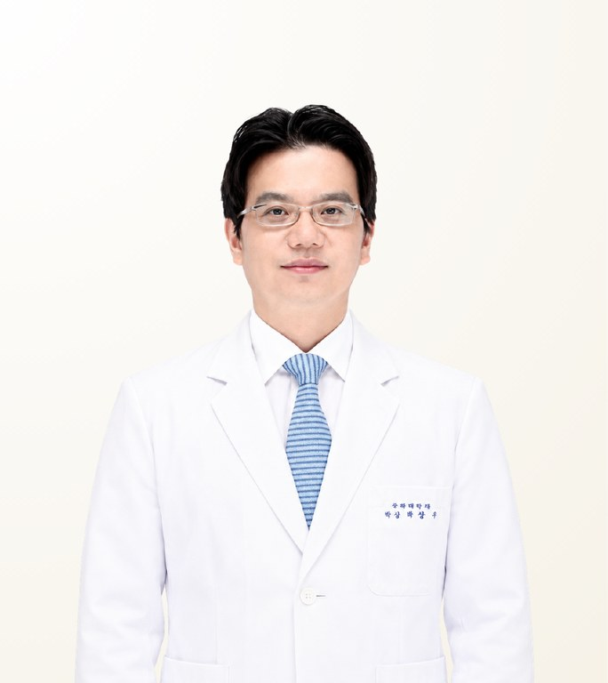

แพทย์ที่ผ่านการตรวจสอบโดย STMSTYLE
ชเว ซุนอู
Choi Soon Woo · 최순우
คลินิกศัลยกรรมวิว · ศัลยแพทย์ตกแต่งเฉพาะทาง
- ดึงหน้า (SMAS)
- มินิลิฟต์
- ยกกระชับแก้ไข
- ประสบการณ์
- ประสบการณ์ 21 ปี (วุฒิบัตรศัลยแพทย์ตกแต่งปี 2005)
- เคสผ่าตัด/หัตถการ
- มากกว่า 20,000 เคส
- ระยะพำนักที่แนะนำ
- มาตรฐาน 8 วัน 7 คืน ปรับตามประเภทการผ่าตัด
เกี่ยวกับแพทย์
นพ.ชเว ซุนอู เป็นศัลยแพทย์ตกแต่งเฉพาะทางและผู้อำนวยการคลินิกศัลยกรรมวิว กรุงโซล เป็นที่รู้จักด้านการดึงหน้า มินิลิฟต์ และการยกกระชับแก้ไขในผู้ที่เคยยกกระชับแล้วได้ผลไม่เพียงพอหรือหย่อนคล้อยซ้ำ แพทย์ได้รับวุฒิบัตรศัลยแพทย์ตกแต่งในปี 2005 มีประสบการณ์ 21 ปีและมากกว่า 20,000 เคส จบปริญญาเอกทางการแพทย์จากมหาวิทยาลัยแห่งชาติโซล และเป็นแพทย์ในรายการ Let Me In ซีซัน 2–5
Case Expertise
ดึงหน้า (SMAS)
ไม่เพียงดึงผิวหนัง แต่ยกชั้นลึกของใบหน้า (SMAS) ไปพร้อมกันเพื่อแก้ความหย่อนคล้อย กำหนดขอบเขตและทิศทางการดึงจากโครงหน้าร่วมกับระดับที่เนื้อเยื่อหย่อนลง
มินิลิฟต์
สำหรับผู้ที่ความหย่อนคล้อยไม่มากหรือต้องการลดระยะพักฟื้น ทำการยกกระชับโดยลดขนาดแผลและการเลาะเนื้อเยื่อ พร้อมอธิบายขอบเขตการปรับปรุงที่เป็นไปได้ก่อนตัดสินใจ
ยกกระชับแก้ไข
แก้ไขกรณีที่การยกกระชับครั้งก่อนได้ผลไม่เพียงพอ หรือใบหน้าหย่อนคล้อยอีกครั้งเมื่อเวลาผ่านไป โดยตรวจสอบสภาพเนื้อเยื่อหลังการผ่าตัดเดิมก่อนกำหนดขอบเขตและทิศทางการแก้ไข
หัตถการอื่นที่ให้บริการ
วัสดุและอุปกรณ์ที่ใช้
วิดีโอ
วิดีโอถามตอบกับแพทย์สอบถามข้อมูลเพิ่มเติมกับทีมงานได้ทาง LINEปรัชญาในการรักษา
แพทย์ประเมินรูปหน้าร่วมกับระดับความหย่อนคล้อย เพื่อกำหนดขอบเขตการยกกระชับที่จำเป็น แทนการดึงผิวเพียงอย่างเดียว ทั้งในเคสผ่าตัดครั้งแรกและเคสที่เคยยกกระชับแล้วได้ผลไม่เพียงพอหรือต้องแก้ไข ท่านมุ่งให้เกิดการเปลี่ยนแปลงที่ตอบโจทย์และสมดุลกับใบหน้าทั้งหมด
— ชเว ซุนอู
มุมมองจาก STMSTYLE
STMSTYLE เคยร่วมทีมผลิตรายการ Let Me In ฉบับประเทศไทยกับ นพ.ชเว ซุนอู โดยตรง และยังประสานการดูแลด้านโครงหน้าและยกกระชับกับท่านอย่างต่อเนื่อง เราเห็นว่าท่านเป็นตัวเลือกที่น่าสนใจสำหรับการดึงหน้าและมินิลิฟต์ รวมถึงเคสที่เคยยกกระชับแล้วได้ผลไม่เพียงพอหรือกลับมาหย่อนคล้อยอีกครั้ง จุดแข็งอีกด้านคือการประเมินโครงกระดูกใบหน้าและเนื้อเยื่ออ่อนร่วมกัน
STMSTYLEประวัติการศึกษาและการทำงาน
ดูประวัติทั้งหมด
การศึกษา
- ปริญญาเอกทางการแพทย์ บัณฑิตวิทยาลัย มหาวิทยาลัยแห่งชาติโซล
ใบอนุญาตและวุฒิบัตร
- วุฒิบัตรศัลยแพทย์ตกแต่งเฉพาะทาง (เกาหลี) 2005
ประสบการณ์การทำงาน
- ผู้อำนวยการใหญ่ คลินิกศัลยกรรมวิว (ปัจจุบัน)
- แพทย์ฝึกหัดและแพทย์ประจำบ้านสาขาศัลยกรรมตกแต่ง โรงพยาบาลมหาวิทยาลัยแห่งชาติโซล
- อาจารย์คลินิกพิเศษ แผนกศัลยกรรมตกแต่ง โรงพยาบาลมหาวิทยาลัยแห่งชาติโซล
- แพทย์ในรายการ Let Me In ซีซัน 2–5
คำถามที่พบบ่อย
นพ.ชเว ซุนอู เก่งเรื่องการยกกระชับแก้ไขหรือไม่?
การยกกระชับแก้ไขเป็นหนึ่งในหัตถการหลักของ นพ.ชเว ซุนอู สำหรับผู้ที่ยกกระชับครั้งก่อนแล้วได้ผลไม่เพียงพอหรือหย่อนคล้อยซ้ำ แพทย์ตรวจสอบสภาพเนื้อเยื่อหลังการผ่าตัดเดิมก่อนกำหนดขอบเขตและทิศทางการแก้ไข STMSTYLE มองว่าแพทย์เป็นตัวเลือกที่น่าสนใจเป็นพิเศษสำหรับเคสลักษณะนี้
ดึงหน้ากับมินิลิฟต์ของ นพ.ชเว ซุนอู ต่างกันอย่างไร?
การดึงหน้าของ นพ.ชเว ซุนอู ยกชั้นลึก SMAS ไปพร้อมผิวหนังเพื่อแก้ความหย่อนคล้อยอย่างครอบคลุม ส่วนมินิลิฟต์เหมาะกับผู้ที่หย่อนคล้อยไม่มากหรืออยากพักฟื้นสั้นลง โดยลดขนาดแผลและการเลาะเนื้อเยื่อ แพทย์จะอธิบายขอบเขตการปรับปรุงที่เป็นไปได้ก่อนตัดสินใจ
นพ.ชเว ซุนอู มีประวัติการศึกษาและการทำงานอย่างไร?
นพ.ชเว ซุนอู ได้รับวุฒิบัตรศัลยแพทย์ตกแต่งในปี 2005 จบปริญญาเอกทางการแพทย์จากมหาวิทยาลัยแห่งชาติโซล และฝึกอบรมที่โรงพยาบาลมหาวิทยาลัยแห่งชาติโซล แพทย์เป็นอาจารย์คลินิกพิเศษที่โรงพยาบาลเดียวกัน และเป็นแพทย์ในรายการ Let Me In ซีซัน 2–5
ดึงหน้ากับ นพ.ชเว ซุนอู ควรพำนักที่เกาหลีกี่วัน?
ระยะพำนักมาตรฐานคือ 8 วัน 7 คืน และปรับตามประเภทการผ่าตัด คลินิกศัลยกรรมวิวมีวิสัญญีแพทย์เฉพาะทาง กล้อง CCTV การติดตามสัญญาณชีพแบบเรียลไทม์ และอุปกรณ์รับมือภาวะฉุกเฉิน เพื่อดูแลการผ่าตัดและการฟื้นตัวอย่างเป็นระบบ
นพ.ชเว ซุนอู ผ่าตัดด้วยตนเองหรือไม่ และปรึกษาผ่าน STMSTYLE ได้ไหม?
นพ.ชเว ซุนอู ผ่าตัดด้วยตนเองในฐานะแพทย์ผู้ดูแลเคส STMSTYLE ซึ่งเคยร่วมทีมกับแพทย์ในการผลิตรายการ Let Me In ฉบับประเทศไทยและส่งต่อผู้รับบริการมาอย่างต่อเนื่อง ช่วยประสานการปรึกษาเบื้องต้นจากกรุงเทพฯ ผ่าน LINE หรือ WhatsApp การตัดสินใจสุดท้ายทำหลังการเข้าพบแพทย์เพื่อปรึกษาโดยตรง
แหล่งที่มาของข้อมูล
ดูแหล่งที่มาและบันทึกการตรวจสอบ
| รายการ | แหล่งที่มา | วันที่ตรวจสอบ |
|---|---|---|
| ตำแหน่งผู้อำนวยการ ปริญญาเอก ม.แห่งชาติโซล การฝึกอบรม และตำแหน่งอาจารย์คลินิกพิเศษ | โปรไฟล์ทางการของคลินิกศัลยกรรมวิว | 2026-08-31 |
| ปีที่ได้รับวุฒิบัตรศัลยแพทย์ตกแต่ง (2005) | ข้อมูลแพทย์ที่เปิดเผยต่อสาธารณะ | 2026-08-31 |
| การเป็นแพทย์ในรายการ Let Me In ซีซัน 2–5 | โปรไฟล์ทางการของโรงพยาบาล และการร่วมผลิตรายการกับ STMSTYLE | 2026-08-31 |
| แนวทางการรักษาและผลการยกกระชับ | การตรวจสอบโดยตรงของ STMSTYLE จากความร่วมมือระยะยาว การพบแพทย์ และการประสานงานผู้รับบริการ | 2026-08-31 |
บันทึกการตรวจสอบ · 2026-08-31
STMSTYLE ตรวจสอบข้อมูลของ นพ.ชเว ซุนอู ผ่านการร่วมผลิตรายการและความร่วมมือระยะยาว การพบปะกับแพทย์โดยตรง การประสานงานผู้รับบริการจริง และการเทียบกับโปรไฟล์ทางการของโรงพยาบาล